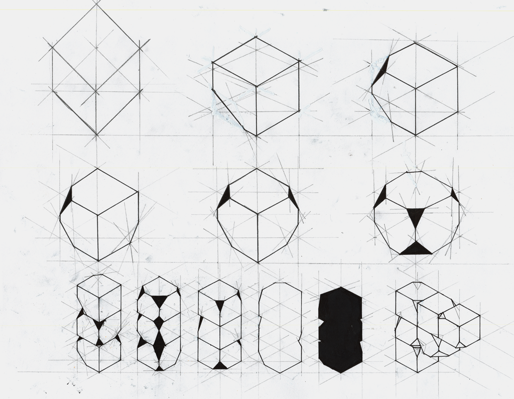
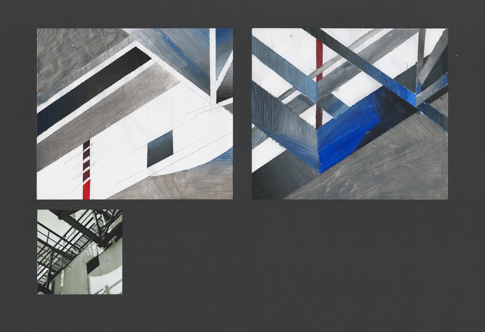
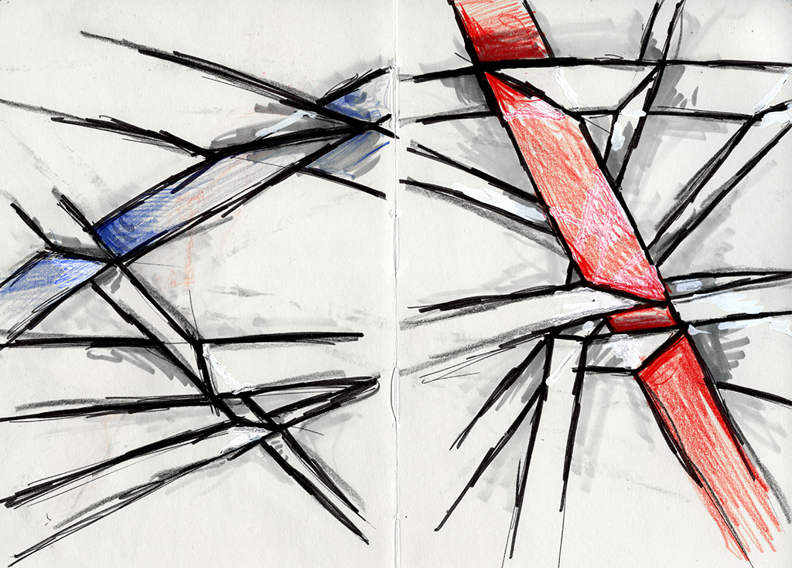
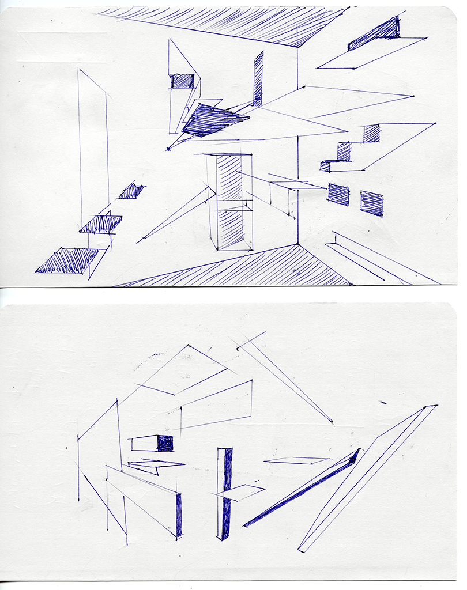

Niklas Thran
Catalog
@
Geometrie- und Perspektivenstudien
Geometric and Perspectival Studies
2015-03
Die zwei Zeichnungen experimentieren mit grundlegender Geometrie und Perspektive, unter Anderem inspiriert an statikrelevanten Bauelementen.
The two drawings experiment with basic geometry and perspective, taking inspiration from structural construction elements.
Zeichnung auf Papier, verschiedene Formate
Drawing on paper, varying dimensions
   